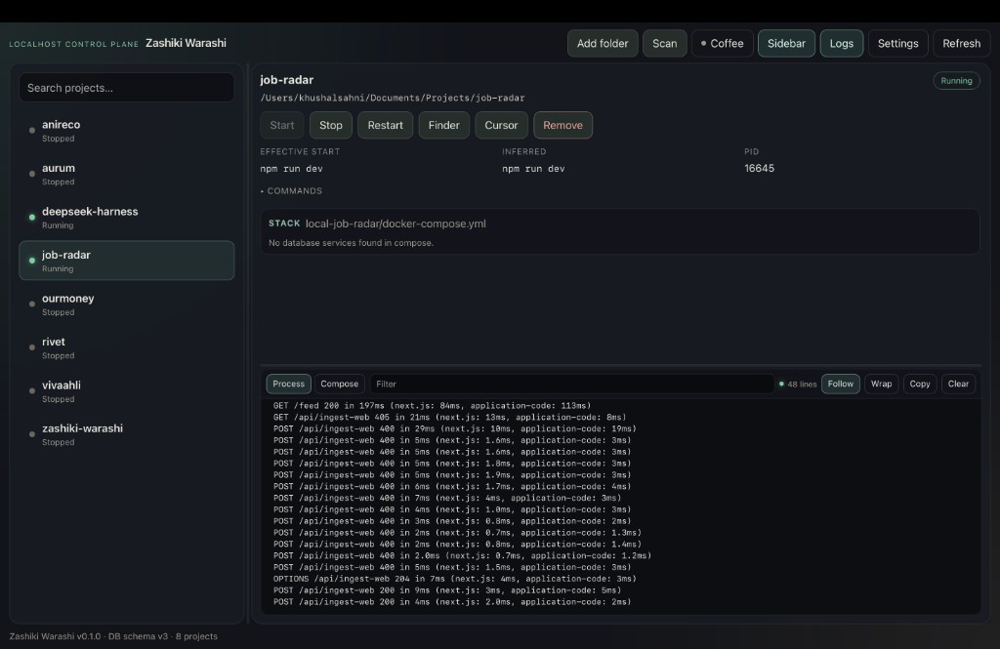

localhost control plane · macOS
Zashiki Warashi
A macOS control plane for the localhost pile — especially AI-generated repos. It remembers projects, one-button start/stop, peeks Compose/DB endpoints, and deep-links into Cursor / Finder / Compass. It is not a Docker GUI, not Portainer/Dockge, not a Raycast launcher, and not a folder bookmark.
Unsigned builds for now — first open may need right-click → Open, or
xattr -dr com.apple.quarantine on the app. Requires Docker
Desktop or OrbStack for Compose stacks.

StartStopFinderCursor
Stack · postgres :5433 · mongodb · copy URI
logs · compose